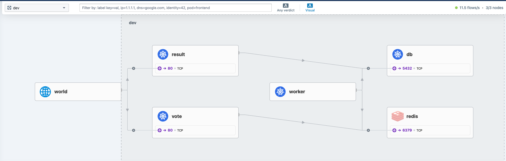
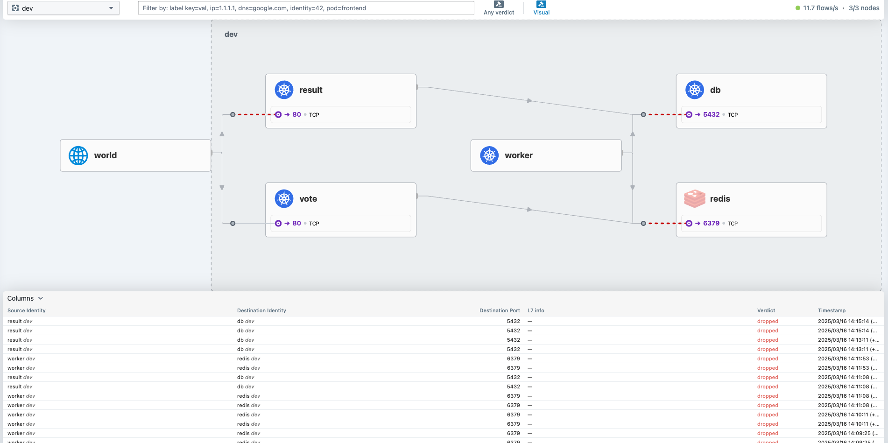
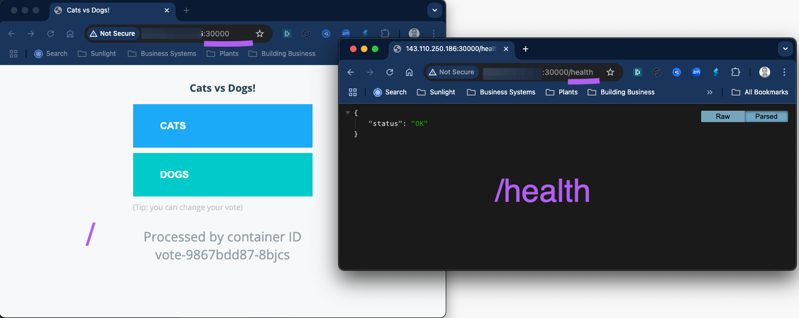
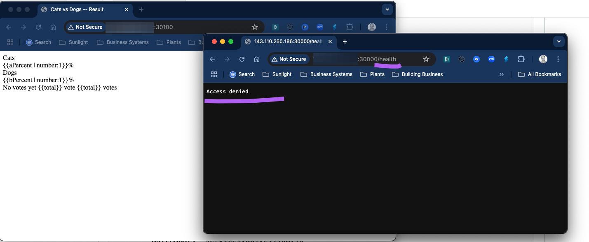

Lab 4 - Exploring Cilium
In this lab, you will explore some of the key features of Cilum and how it works. Lets begin by deploying a sample application and then dive into the observability and networking features of Cilium.
Deploy sample app
- Start by examining the deployment code in the repo advk8s/instavote-kustomize: Deployment Code with Kustomize
- Fork the application repo advk8s/instavote-kustomize: Deployment Code with Kustomize to create your own copy.
Clone the repo
# Use this if you want to use your own fork
git clone https://github.com/xxxxxx/instavote-kustomize.git
# Else use this (default repo)
git clone https://github.com/advk8s/instavote-kustomize.git
where, replace xxxxxx with your own account/org name.
kubectl create namespace dev
kubectl get ns
Check and set contenxt to work with the dev namespace
kubectl config get-contexts
kubectl config set-context --current --namespace=dev
kubectl config get-contexts
Examine the code in the instavote-kustomize repo that you cloned earlier as
cd instavote-kustomize
kubectl apply -k base/
kubectl get all
You could use the observability tool setup earlier i.e.g Hubble to view the traffic flow as,

Examine Service Networking with Cilium
Cilium used eBPF instead of iptables to setup networking. If you remember, we had examined the iptables rules setup by the kindnet CNI earlier. If you want to see the equivalent rules setup by Cilium, you can use the following method.
Find out the ciilim pods running in the cluster.
kubectl get pods -n kube-system -l k8s-app=cilium
[Sample Output]
NAME READY STATUS RESTARTS AGE
cilium-2wv8z 1/1 Running 0 155m
cilium-pqzpp 1/1 Running 0 155m
cilium-r4rq4 1/1 Running 0 155m
kubectl exec -it -n kube-system -c cilium-agent cilium-xxxxx -- bash
where, replace cilium-xxxxx with the actual pod name.
Instead of using iptables, you could list the service rules setup by cilium as,
cilium service list
[sample output]
ID Frontend Service Type Backend
1 10.96.0.1:443/TCP ClusterIP 1 => 172.18.0.2:6443/TCP (active)
2 10.96.115.10:443/TCP ClusterIP 1 => 172.18.0.4:4244/TCP (active)
3 10.96.0.10:53/UDP ClusterIP 1 => 10.244.2.78:53/UDP (active)
2 => 10.244.2.177:53/UDP (active)
4 10.96.0.10:53/TCP ClusterIP 1 => 10.244.2.78:53/TCP (active)
2 => 10.244.2.177:53/TCP (active)
5 10.96.0.10:9153/TCP ClusterIP 1 => 10.244.2.78:9153/TCP (active)
2 => 10.244.2.177:9153/TCP (active)
8 10.96.159.218:80/TCP ClusterIP 1 => 10.244.1.209:4245/TCP (active)
9 10.96.98.215:80/TCP ClusterIP 1 => 10.244.1.218:8081/TCP (active)
10 10.96.5.78:5432/TCP ClusterIP 1 => 10.244.2.17:5432/TCP (active)
11 10.96.5.106:6379/TCP ClusterIP 1 => 10.244.1.97:6379/TCP (active)
12 10.96.241.176:80/TCP ClusterIP 1 => 10.244.2.170:80/TCP (active)
13 10.96.67.227:80/TCP ClusterIP 1 => 10.244.1.74:80/TCP (active)
2 => 10.244.2.135:80/TCP (active)
You could try scaling the vote deployment to see these rules being updated.
# Run this from outside the pod where kubectl is setup
kubectl scale deploy vote --replicas=4
kubectl get pods
and validate
cilium service list
[sample output with clsuterIP and endpoints for vote service]
13 10.96.67.227:80/TCP ClusterIP 1 => 10.244.1.74:80/TCP (active)
2 => 10.244.2.135:80/TCP (active)
3 => 10.244.2.104:80/TCP (active)
4 => 10.244.1.238:80/TCP (active)
you could get some more information using
cilium bpf lb list
Configuring Network Policies with Cilium
Check the cilium policies on endpoints (Pods )
# find the cilium pod running on kind-worker node
CILIUM_POD=$(kubectl get pods -n kube-system -l "k8s-app=cilium" --field-selector spec.nodeName=kind-worker -o jsonpath="{.items[0].metadata.name}")
# show the cilium endpoint configs
kubectl -n kube-system exec -it $CILIUM_POD -- cilium-dbg endpoint list
This find the cilium pod running on kind-worker node and show you the output of cilium-dbg endpoint list command.
e.g.
ENDPOINT POLICY (ingress) POLICY (egress) IDENTITY LABELS (source:key[=value]) IPv6 IPv4 STATUS
ENFORCEMENT ENFORCEMENT
358 Disabled Disabled 1 reserved:host ready
368 Disabled Disabled 56081 k8s:app=vote 10.244.1.129 ready
k8s:env=dev
k8s:io.cilium.k8s.namespace.labels.kubernetes.io/metadata.name=dev
k8s:io.cilium.k8s.policy.cluster=default
k8s:io.cilium.k8s.policy.serviceaccount=default
k8s:io.kubernetes.pod.namespace=dev
k8s:project=instavote
636 Disabled Disabled 18582 k8s:app=worker 10.244.1.52 ready
k8s:env=dev
k8s:io.cilium.k8s.namespace.labels.kubernetes.io/metadata.name=dev
k8s:io.cilium.k8s.policy.cluster=default
k8s:io.cilium.k8s.policy.serviceaccount=default
k8s:io.kubernetes.pod.namespace=dev
k8s:project=instavote
1326 Disabled Disabled 4 reserved:health 10.244.1.10 ready
1674 Disabled Disabled 9862 k8s:app=db 10.244.1.154 ready
k8s:env=dev
k8s:io.cilium.k8s.namespace.labels.kubernetes.io/metadata.name=dev
k8s:io.cilium.k8s.policy.cluster=default
k8s:io.cilium.k8s.policy.serviceaccount=default
k8s:io.kubernetes.pod.namespace=dev
k8s:project=instavote
1832 Disabled Disabled 19784 k8s:app=redis 10.244.1.115 ready
k8s:env=dev
k8s:io.cilium.k8s.namespace.labels.kubernetes.io/metadata.name=dev
k8s:io.cilium.k8s.policy.cluster=default
k8s:io.cilium.k8s.policy.serviceaccount=default
k8s:io.kubernetes.pod.namespace=dev
k8s:project=instavote
1968 Disabled Disabled 38614 k8s:app=result 10.244.1.135 ready
k8s:env=dev
k8s:io.cilium.k8s.namespace.labels.kubernetes.io/metadata.name=dev
k8s:io.cilium.k8s.policy.cluster=default
k8s:io.cilium.k8s.policy.serviceaccount=default
k8s:io.kubernetes.pod.namespace=dev
k8s:project=instavote
You will notice the Cilium policies are disabled on all the endpoints/pods. Lets add a L3/L4 Network Policy.
Adding L3/L4 Network Policies
Lets configure a policy to block all traffic for the pods running in the dev namespace. This is a extremely restrictive policy.
+-----------------------------------------------------------+
| |
| +----------+ +-----------+ |
x | | result | | db | |
| | | | | |
| +----------+ +-----------+ |
| |
| |
| +----+----+--+ |
| | worker | |
| | | |
| +----+-------+ |
| |
| |
| +----------+ +-----------+ |
| | vote | | redis | |
x | | | | | |
| +----------+ +-----------+ |
| |
+-----------------------------------------------------------+
# File : cilium-netpol.yaml
apiVersion: "cilium.io/v2"
kind: CiliumNetworkPolicy
metadata:
name: "default"
namespace: dev
spec:
endpointSelector: {} # Applies to all pods in the dev namespace
ingressDeny: # Explicitly deny all ingress traffic
- {}
egressDeny: # Explicitly deny all egress traffic
- {}
kubectl apply -f cilium-netpol.yaml
kubectl get cnp
kubectl describe cnp default
kubectl -n kube-system exec -it $CILIUM_POD -- cilium-dbg endpoint list
[sample output ]
# kubectl -n kube-system exec -it $CILIUM_POD -- cilium-dbg endpoint list
Defaulted container "cilium-agent" out of: cilium-agent, config (init), mount-cgroup (init), apply-sysctl-overwrites (init), mount-bpf-fs (init), clean-cilium-state (init), install-cni-binaries (init)
ENDPOINT POLICY (ingress) POLICY (egress) IDENTITY LABELS (source:key[=value]) IPv6 IPv4 STATUS
ENFORCEMENT ENFORCEMENT
358 Disabled Disabled 1 reserved:host ready
368 Enabled Enabled 56081 k8s:app=vote 10.244.1.129 ready
k8s:env=dev
k8s:io.cilium.k8s.namespace.labels.kubernetes.io/metadata.name=dev
k8s:io.cilium.k8s.policy.cluster=default
k8s:io.cilium.k8s.policy.serviceaccount=default
k8s:io.kubernetes.pod.namespace=dev
k8s:project=instavote
636 Enabled Enabled 18582 k8s:app=worker 10.244.1.52 ready
k8s:env=dev
k8s:io.cilium.k8s.namespace.labels.kubernetes.io/metadata.name=dev
k8s:io.cilium.k8s.policy.cluster=default
k8s:io.cilium.k8s.policy.serviceaccount=default
k8s:io.kubernetes.pod.namespace=dev
k8s:project=instavote
1326 Disabled Disabled 4 reserved:health 10.244.1.10 ready
1674 Enabled Enabled 9862 k8s:app=db 10.244.1.154 ready
k8s:env=dev
k8s:io.cilium.k8s.namespace.labels.kubernetes.io/metadata.name=dev
k8s:io.cilium.k8s.policy.cluster=default
k8s:io.cilium.k8s.policy.serviceaccount=default
k8s:io.kubernetes.pod.namespace=dev
k8s:project=instavote
1832 Enabled Enabled 19784 k8s:app=redis 10.244.1.115 ready
k8s:env=dev
k8s:io.cilium.k8s.namespace.labels.kubernetes.io/metadata.name=dev
k8s:io.cilium.k8s.policy.cluster=default
k8s:io.cilium.k8s.policy.serviceaccount=default
k8s:io.kubernetes.pod.namespace=dev
k8s:project=instavote
1968 Enabled Enabled 38614 k8s:app=result 10.244.1.135 ready
k8s:env=dev
k8s:io.cilium.k8s.namespace.labels.kubernetes.io/metadata.name=dev
k8s:io.cilium.k8s.policy.cluster=default
k8s:io.cilium.k8s.policy.serviceaccount=default
k8s:io.kubernetes.pod.namespace=dev
k8s:project=instavote
You should also see the connections dropped from hubble UI

Now lets setup some policies with the following goals
1 Allow cluster wide communication → Pods within the same cluster should be able to talk to each other.
3 Allow public access to vote and result pods → Pods labeled app: vote and app: result should be accessible from outside the cluster.
+-----------------------------------------------------------+
| |
| +------------+ +-----------+ |
=====> | results | ------>| db | |
| | | | | <-------+ |
| +------------+ +-----------+ | |
| | |
| | |
| +----+----+---+ |
| | worker | |
| | | |
| +----+--------+ |
| | |
| | |
| +----------+ +-----------+ | |
| | vote | | redis | <-------+ |
=====> | | ------> | | |
| +----------+ +-----------+ |
| |
+-----------------------------------------------------------+
start by labeling the namespace
kubectl label namespace dev kubernetes.io/metadata.name=dev
kubectl get ns --show-labels
# File : cilium-netpol.yaml
apiVersion: "cilium.io/v2"
kind: CiliumNetworkPolicy
metadata:
name: default
namespace: dev
spec:
endpointSelector: {} # Applies to all pods in the instavote namespace
ingress:
- fromEntities:
- cluster
egress:
- toEntities:
- cluster
---
apiVersion: "cilium.io/v2"
kind: CiliumNetworkPolicy
metadata:
name: public-ingress
namespace: dev
spec:
endpointSelector:
matchExpressions:
- {key: app, operator: In, values: [vote, result]}
ingress:
- fromEntities:
- world # Allow incoming traffic from outside the cluster (internet)
toPorts:
- ports:
- port: "80"
protocol: TCP
Apply and validate
kubectl apply -f cilium-netpol.yaml
kubectl get cnp
Adding L7 Policies to restrict access to specific API endpoints
Currently, you are able to access both, / as well as /health on the frontend vote app.

Lets add a L7 Policy where we explicitly restrict one of the API Endpoints i.e. /health from being accessed from the world.
Try adding the rules section, or replace the entire file
# File : cilium-netpol.yaml
apiVersion: "cilium.io/v2"
kind: CiliumNetworkPolicy
metadata:
name: default
namespace: dev
spec:
endpointSelector: {} # Applies to all pods in the instavote namespace
ingress:
- fromEntities:
- cluster
egress:
- toEntities:
- cluster
---
apiVersion: "cilium.io/v2"
kind: CiliumNetworkPolicy
metadata:
name: public-ingress
namespace: dev
spec:
endpointSelector:
matchExpressions:
- {key: app, operator: In, values: [vote, result]}
ingress:
- fromEntities:
- world # Allow incoming traffic from outside the cluster (internet)
toPorts:
- ports:
- port: "80"
protocol: TCP
rules:
http:
- method: "GET"
path: "/" # Allow homepage
kubectl apply -f cilium-netpol.yaml
Now you should see that
* /health is completely blocked.
* frontned apps on / are accessible but the java script and css does not get loaded

Further experimentation: You could further add rules to allow css and static content to show the vote app propertly as
rules:
http:
- method: "GET"
path: "/"
- method: "GET"
path: "/static"
- method: "GET"
path: "/static/"
- method: "GET"
path: "/static/.*"
- method: "GET"
path: "/css"
- method: "GET"
path: "/css/"
- method: "GET"
path: "/css/.*"
Once you are done, you could delete it using
kubectl delete -f cilium-netpol.yaml
Summary
In this lab, we explored Cilium CNI, whats makes it special, how it configures service networking, the observability features it provides and finally, how to use Cilium Network Policies to control traffic flow.